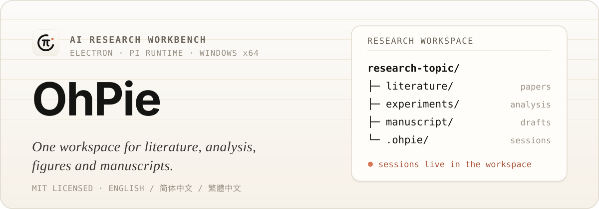

Nineteen pages on installing it, running a study end to end, configuring models and MCP, and shipping the result — written from the workspace outward.

one workspaceConversation, history and canvas — the surface you touch every day.
A cell can run, a file can be registered, and the conclusion can still be wrong.
OhPie records execution and provenance. It does not certify that a method, a citation or a statistic is correct. The peer-review and claim-audit packs are built to ask for evidence rather than agreement.
three different facts.From the first search to the submitted manuscript, and where each stage lands.
Ordinary folders hold the research; one hidden folder holds the agent's state.
07Four stages, one return edge, and a provenance record that is not a verdict.
08Search, screening, close reading, claim-level citation checks and counter-evidence.
09A persistent kernel, the notebook standard, publication figures and artifact registration.
10What the Material Passport records, and what it does not prove.
11Structured drafting, figure and statistics checks, simulated review, grants and rebuttals.
1225 bundled packs, grouped by the job they actually do, plus how they load and how to write one.
13ToolUniverse and BioMCP run as external MCP services; OhPie supplies the conversation, discovery and file canvas.
Models, MCP servers and extensions, resolved per scope.
Desktop behaviour, packaging and troubleshooting.